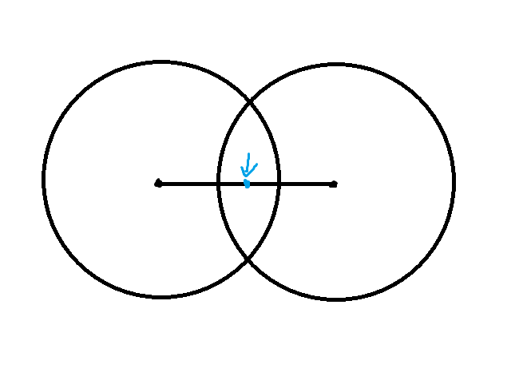

SEERC 2020 赛后小结
比赛链接：https://qoj.ac/contest/636
开局过 E ，和队友讨论 B ，讨论着讨论着队长听到直接秒了，我上去写过了，队友秒了 M，F，期间我和剩下的队友讨论 L ，看到有人 9 min 过 L ，我们以为是贪心，贪了半天，后面队友去做别的题，我无可奈何，搞了个 $log^2$ 做法遗憾上机，一个小时的时候过了此题。
队友们秒了 I ，然后 Imakf 上去写，但是突然牢起来了，期间我会做了 A 和 H ，队长会做了 D ，会一半的 G ，我上去过了 A,H 后，两个小时到了，去看处于水火之中的 Imakf ，队长上 D 。
讨论一番，发现他 DP 状态设的不好，后面又讨论了一下 DP 转移，发现我其实也考虑漏了，但综合起来对很多，后面 Imakf 上去改 I ，两个半小时过 D,I 。
后面和队长讨论 J ，一开始觉得他在放屁，不知道他在说什么，再加上队长能说会道，妙语连珠，一下子输出观点给我输出懵逼了，差点红温，出去冷静了一下，当时以为他的圆交圆只能是圆这个性质只能用来求交，没什么用。但是在半个小时后手模了一下，发现之前没有参透队长话语之精髓，突然发现其实这个性质就已经做完此题。队长伟大，无需多言。
后面又想了半个小时怎么写，后面上机半小时过了，此时四个小时。
首先我在知道完所有性质还玩了一个小时，确实菜了，这个不用洗，下次必须快一点，我觉得半小时都算慢了。
其次说句实话，我其实有点烦队长的沟通方式，在我还没熟悉题目，听懂他前面想法的时候，后面的话就跟过来了，然后队长反应比较快，有新想法又喜欢 “哦” 吸引注意然后继续输出，我又恰好反应比较慢，给他这么一整，整一段话经常听完没法思考，听着听着就容易红温，红温了就容易懒得鸟他，而且他在说勾八话的时候也是有的，这个时候不能思考被迫听他放屁就比较痛苦了。
但是呢，这需要改吗？我觉得其实不需要，首先我的反应比较慢所以这种沟通有点史，Imakf 跟他沟通就比较融洽；其次如果让队长说慢一点，万一他一停下来就宕机了就不好了，不如就让他先把观点输出完，毕竟虽然口胡很多，但也有不少次直接把题目秒了的情况在；再其次，虽然队长说的话我当时无法思考，但后面大抵都是能懂的，后面没懂的时候大部分是因为他确实在放屁，所以也无所谓；最后就是我红温不仅是因为沟通方式的问题，我本身沟通久了容易红，以及当我渴望自己做出这道题目但是直接被队友爆出了一堆性质的时候我也会红温，所以我红温不仅是沟通的问题，也有我的问题在，这也是我需要改的事情。
综上，没必要去强行改变和队长的沟通方式，在此之前，我觉得我需要先去解决我容易红的问题，以及意识到这是个团队游戏，虽然我觉得后一条非常困难，毕竟打比赛的目的中但凡有奔着证明自己实力的成分去，就不可避免会在队友 C 而自己徒劳无功的时候感到难受，毕竟一场下来只能起到写代码的作用那真是闹麻了，总之这里有个度，我觉得有个度正常，但是我可能这个度有点超乎常理了，确实应该调得正常一点，这样和队友的配合才会更好，更何况我打比赛的核心目的是为了打钱。
接着复盘，后面我一直在想 K ，队长爆了一个关键的性质考虑 $\frac{d}{3}$ ，但是我没鸟他，虽然鸟了也没啥用，因为我们全队没有一个人意识到容斥可以逐位确定答案，以至于所有人都没有想容斥，虽然最后容斥确实难，但是连容斥都没想过就直接遗憾离场确实有点搞了。而且说句实话，我其实之前好像见过甚至用过这个容斥，想一个小时容斥真有机会想出来吧
但是队友非常给力啊，搞了一个小时 C 搞出来打表做法。
最后几分钟过了，极限！
赛时队友写了一半的 G 在赛后过了，队友伟大，无需多言。
我这场的问题：
- 其实应该在过了 A 后就去询问一下 Imakf 的情况，毕竟 Imakf 因为这种问题牢了一个半小时直接让其可能能产生贡献的机会少了很多，虽然确认应该相信队友能解决问题，但是询问一下也是应该的，毕竟这个询问一下情况也不会花很多时间，相反，如果让 Imakf 多一个小时想题我们这把可能打的更好。
- 队长报完了 J 的性质我还想了一小时，这真是脑子有问题吧。
部分题解：
B
注意到几个操作分别对应逆序对数 $-1/-2$ 。
猜一下只要逆序对数 $\ge 2$ ，就一定存在 $110,100,1010$ 四种情况中的一种，所以对应 NIM 游戏中的 $-1,-2$ ，所以答案就是会不会被 $3$ 整除。
事实上也不难证明，你讨论一下 $1$ 在 $0$ 中的放置位置就行了。
F
L
二分加贪心。
首先注意到这个答案显然是可以二分的。
然后在二分答案后，我们不妨根据 $m,p$ 分别排一次序，然后我们尝试维护用到的数字在 $m$ 排序后的数组是哪个前缀，和 $p$ 排序后的数组是哪个前缀（不是所有数字）。
原因是显然，我们可以把数组分为三类，偷的，不干的，资助的，注意到不干的里面所有的 $m\le$ 偷的 $m$ ，对资助的 $p$ 也是。
所以偷的和资助的一部分数字理应构成 $m$ 数组的一个前缀 ，$p$ 也是。
所以枚举一下 $m$ 的前缀，然后 $p$ 用双指针扫一下就行了。
至于每个人是偷还是资助，可以注意到是根据 $m+p$ 排序，所以用两个 set 维护一下就行了。
时间复杂度：$O(n\log^2n)$ 。
RE 了一发，因为有个地方写的纯错。
A
不难，注意到差分一下，每个位置的贡献是 $-1/0/1$ ，所以选择每个数字的贡献是后缀和。
不妨考虑全部选 $-1$ ，这样就是每个数字选 $1,2$ ，保证前缀和 $\ge 0$ ，且总和得是 $0/1$ ，那么就堆处理一下就行了。
时间复杂度：$O(n\log{n})$ 。
H
注意到假设最终相等的这个数字为 $x$ ，统计其二进制位数为 $c$ ，二进制位数 $>c$ 的一定在 $and$ 里头 ，$<c$ 在 $or$ 里头。
注意到这个性质，讨论一下就行了，很好写。
别的队注意到的性质比较差，注意到 $x\ge x\And y$ ，$or$ 反之，所以一定是 $
所以每层合并写个归并排序合并。
时间复杂度都是：$O(n\log{n}\log{V})$
I
注意到只有 $1,2$ 能向上跳，所以答案一定为至多两个下降序列拼接起来，所以用 $dp$ 维护一下就行了，转移是调和级数的。
$f[i]$ 表示有两个接头，一个在 $i$ ，一个在 $i+1$ 。
其中转移的时候只考虑 $i+1$ 的跳跃。
防止出现：$4\to 2,3\to 1$ 的情况的时候算重。
反正就是差不多这样的 $dp$ ，具体状态还有转移可能还有点小区别，但反正大差不差了。
时间复杂度：$O(n\log{n})$ 。
J
唐完了。
队长都已经报出做法了还不会做。
首先什么是树上的一个圆，考虑每条边也算是有效单位（即还要算每条边要百分之多少是在点集里的），所有树上距离 $x\le d$ 的点构成的点集是个圆。
现在证明，树上两个圆的交集还是圆：
大概就是讨论一下圆的位置，然后选一下两点的连线，连线上交集的中心就是新的圆心。

上面是一种情况。
所以最终可行的连通块还是一个圆。
考虑手模一下这个过程，由于给定的圆都非常地好，圆心都落在顶点上，而且边界也都落在点上。
所以最终可以证明，最终的圆心一定在顶点或者边中间，边界一定是顶点。
所以就可以得到做法了。
而且这道题目性质还要好，每个点都有一个圆，所以可以证明答案一定是从最小值点或者两个最小值点的中心向外辐射。
随便写写算算概率就行了，时间复杂度：$O(n\log{n})$ 。
概率还有个性质：显然一个点的概率要么是 $0$ ，要么 $\ge \frac{1}{2}$ ，因为显然如果他能选，那么在一个没选他的方案里选他也是合法方案。所以概率 $\ge \frac{1}{2}$ 。
当然，这道题目甚至性质还要强一点，保证了合法，所以还有一个证明圆的方法。
就是随便找一个可行方案，这个可行方案中选的点构成一个虚树，树上有个结论，所有点到虚树直径两端的距离是最远的，而且一定经过虚树的重心（这个重心是可以在边上的），而因为合法，这个距离一定等于 $d$ ，所以得到距离重心 $\le r$ （虚树半径）的点都一定是可以选的，又由于每个点都有限制，所以两个端点一定分别有以他们为最远点的限制，所以可以得到 $>r$ 一定是不能选的。
证毕。
Plan
- 补一下题解
- 看一下题解
- 思考一下 K |B|+1 的性质，看能不能出题。
- 看一下洛谷的题解。
- 找一下之前 CF 的某道题，我似乎在某道题目中使用过 K 的容斥做法，看看是不是一样的（提供自己一点情绪价值）。
- 做一下 F